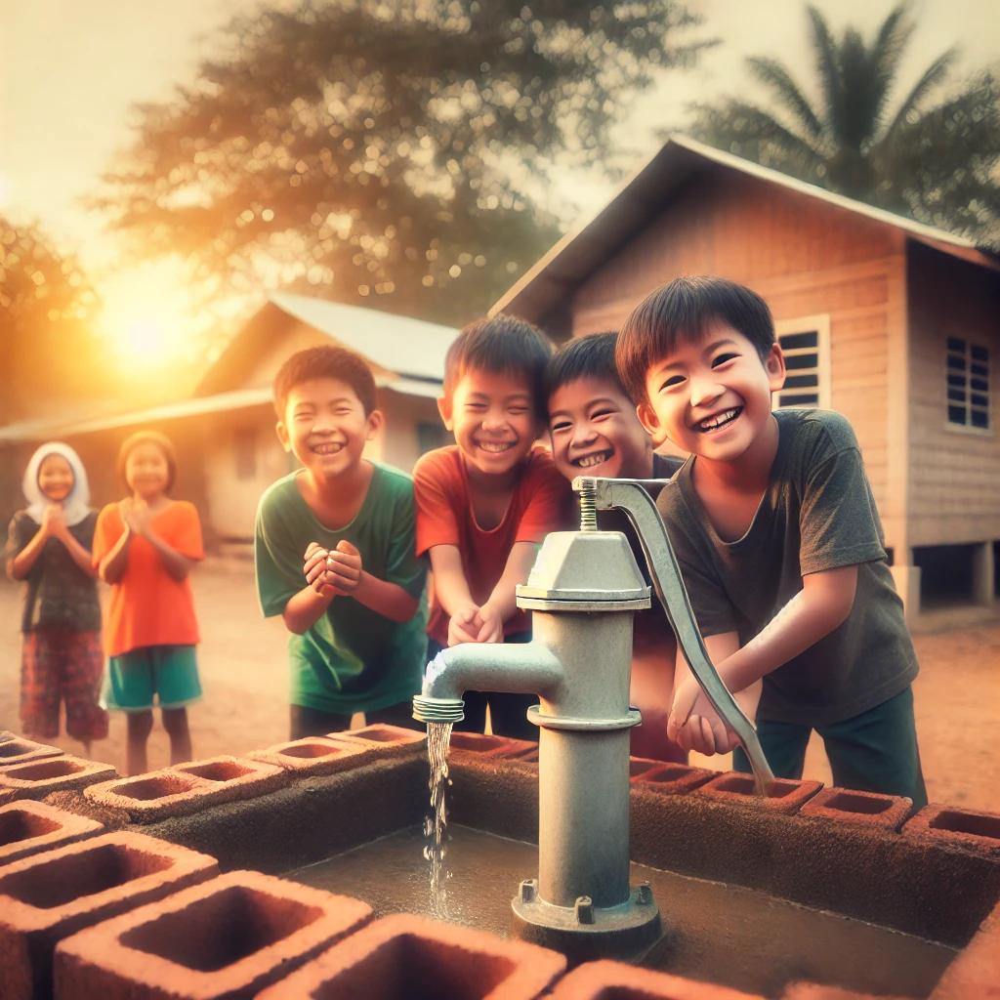

Know About Us
We help underprivileged sections of society to uplift
We work for the development of the Bastis in the Varanasi region of UP, helping in education, health, and finance. We continuously organize events and awareness sessions in those areas, making them aware of government schemes, scholarships, and health. We aim to uplift those underprivileged sections of society.
Learn more

▶
Our Supporters